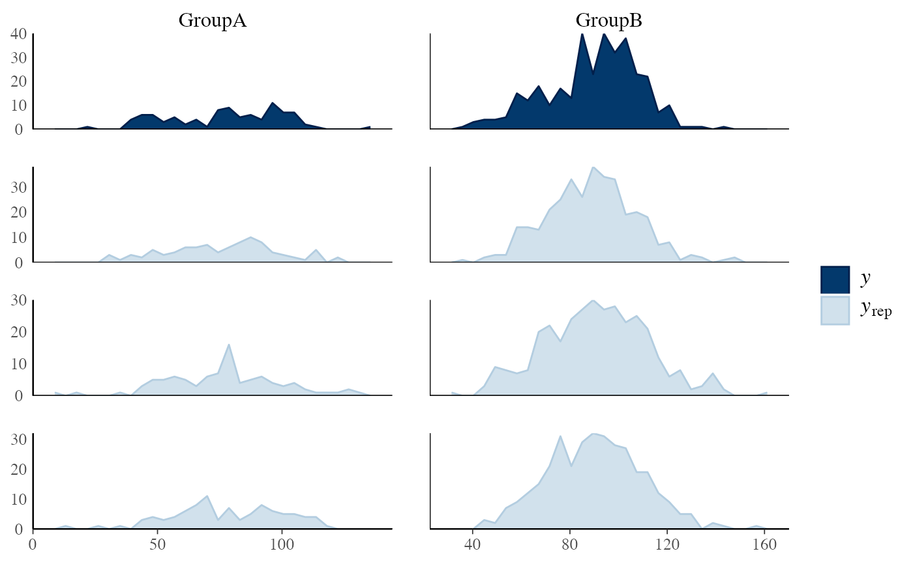

PPC distributions
PPC-distributions.RdCompare the empirical distribution of the data y to the distributions
of simulated/replicated data yrep from the posterior predictive
distribution. See the Plot Descriptions section, below,
for details.
ppc_data(y, yrep, group = NULL) ppc_hist(y, yrep, ..., binwidth = NULL, breaks = NULL, freq = TRUE) ppc_boxplot(y, yrep, ..., notch = TRUE, size = 0.5, alpha = 1) ppc_freqpoly(y, yrep, ..., binwidth = NULL, freq = TRUE, size = 0.25, alpha = 1) ppc_freqpoly_grouped(y, yrep, group, ..., binwidth = NULL, freq = TRUE, size = 0.25, alpha = 1) ppc_dens(y, yrep, ..., trim = FALSE, size = 0.5, alpha = 1) ppc_dens_overlay(y, yrep, ..., size = 0.25, alpha = 0.7, trim = FALSE, bw = "nrd0", adjust = 1, kernel = "gaussian", n_dens = 1024) ppc_ecdf_overlay(y, yrep, ..., discrete = FALSE, pad = TRUE, size = 0.25, alpha = 0.7) ppc_violin_grouped(y, yrep, group, ..., probs = c(0.1, 0.5, 0.9), size = 1, alpha = 1, y_draw = c("violin", "points", "both"), y_size = 1, y_alpha = 1, y_jitter = 0.1)
Arguments
| y | A vector of observations. See Details. |
|---|---|
| yrep | An \(S\) by \(N\) matrix of draws from the posterior
predictive distribution, where \(S\) is the size of the posterior sample
(or subset of the posterior sample used to generate |
| group | A grouping variable (a vector or factor) the same length as
|
| ... | Currently unused. |
| binwidth | Passed to |
| breaks | Passed to |
| freq | For histograms, |
| notch | A logical scalar passed to |
| size, alpha | Passed to the appropriate geom to control the appearance of
the |
| trim | A logical scalar passed to |
| bw, adjust, kernel, n_dens | Optional arguments passed to
|
| discrete | For |
| pad | A logical scalar passed to |
| probs | A numeric vector passed to |
| y_draw | For |
| y_jitter, y_size, y_alpha | For |
Value
The plotting functions return a ggplot object that can be further
customized using the ggplot2 package. The functions with suffix
_data() return the data that would have been drawn by the plotting
function.
Details
For Binomial data, the plots will typically be most useful if
y and yrep contain the "success" proportions (not discrete
"success" or "failure" counts).
Plot Descriptions
ppc_hist(), ppc_freqpoly(), ppc_dens(), ppc_boxplot()A separate histogram, shaded frequency polygon, smoothed kernel density estimate, or box and whiskers plot is displayed for
yand each dataset (row) inyrep. For these plotsyrepshould therefore contain only a small number of rows. See the Examples section.ppc_freqpoly_grouped()A separate frequency polygon is plotted for each level of a grouping variable for
yand each dataset (row) inyrep. For this plotyrepshould therefore contain only a small number of rows. See the Examples section.ppc_dens_overlay(), ppc_ecdf_overlay()Kernel density or empirical CDF estimates of each dataset (row) in
yrepare overlaid, with the distribution ofyitself on top (and in a darker shade). When usingppc_ecdf_overlay()with discrete data, set thediscreteargument toTRUEfor better results. For an example ofppc_dens_overlay()also see Gabry et al. (2019).ppc_violin_grouped()The density estimate of
yrepwithin each level of a grouping variable is plotted as a violin with horizontal lines at notable quantiles.yis overlaid on the plot either as a violin, points, or both, depending on they_drawargument.
References
Gabry, J. , Simpson, D. , Vehtari, A. , Betancourt, M. and Gelman, A. (2019), Visualization in Bayesian workflow. J. R. Stat. Soc. A, 182: 389-402. doi:10.1111/rssa.12378. (journal version, arXiv preprint, code on GitHub)
Gelman, A., Carlin, J. B., Stern, H. S., Dunson, D. B., Vehtari, A., and Rubin, D. B. (2013). Bayesian Data Analysis. Chapman & Hall/CRC Press, London, third edition. (Ch. 6)
See also
Other PPCs: PPC-discrete,
PPC-errors, PPC-intervals,
PPC-loo, PPC-overview,
PPC-scatterplots,
PPC-test-statistics
Examples
#> [1] 500 434ppc_dens_overlay(y, yrep[1:25, ])# for ppc_hist,dens,freqpoly,boxplot definitely use a subset yrep rows so # only a few (instead of nrow(yrep)) histograms are plotted ppc_hist(y, yrep[1:8, ])#>ppc_freqpoly(y, yrep[1:3,], alpha = 0.1, size = 1, binwidth = 5)# if groups are different sizes then the 'freq' argument can be useful group <- example_group_data() ppc_freqpoly_grouped(y, yrep[1:3,], group) + yaxis_text()#>#># don't need to only use small number of rows for ppc_violin_grouped # (as it pools yrep draws within groups) color_scheme_set("gray") ppc_violin_grouped(y, yrep, group, size = 1.5)ppc_violin_grouped(y, yrep, group, alpha = 0)# change how y is drawn ppc_violin_grouped(y, yrep, group, alpha = 0, y_draw = "points", y_size = 1.5)ppc_violin_grouped(y, yrep, group, alpha = 0, y_draw = "both", y_size = 1.5, y_alpha = 0.5, y_jitter = 0.33)